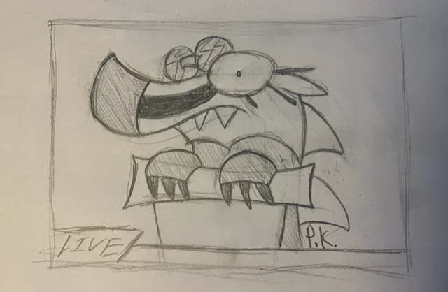

2022 ANNUAL
STATE OF THE BADGER
REPORT

Welcome to the 2022 Badgersaurus year-in-review thingamajig. This is pretty unusual for the site, since most of my writing is on specific topics rather than general diary-style writing about my life. Except for the update log, I guess, but who really reads those?
Anyways, I figured that since it's the holidays, and I've got two weeks off school, and this is the first year I'm going into with this web-site from the start, I should do something special. So here it is!
The First Annual State of the Badger report will include some of my personal notes on the year, my new years' resolutions, and some plans for the site in 2023. In other words, it's the Badgersaurus Holiday Special. And up here in Canada, where the temperatures regularly reach -30 degrees Celsius this time of year, those kinda holiday specials are a physical necessity. You gotta stay warm somehow.
I dunno if I'll do this every year going forwards, but I wanted to try it out anyway. I figured it'd be fun. I have dozens of other pages to work on for the site, and I hope this won't be the only update over winter break, but it's a good start. Or end. Whatever.
2022 IN REVIEW
The hardest part of saying goodbye to this year is knowing that I'll never see such a good sci-fi year number in my lifetime ever again. 2022 just rolls off the tongue so nicely.
Anyway. 2022 was a pretty radical year for me, I would say.
For starters, I made this website. I'm still pretty proud of it. I met a really good group of friends in the spring, after being pretty lonely in previous years, and I'm really glad I did. They're a really, really cool bunch of people. And they all have good music taste, which is impressive.
Also in the spring, I got into school theatre. I'm not one for acting, but I've really enjoyed doing theatre-tech and watching my friends act in and direct plays. I didn't get to work on it, but our school's last production was A Christmas Story, and everyone involved did a killer job. I'm totally-pumped for our next batch of student-written one-act plays in the spring.
I dropped social media entirely over the summer and I've never felt better, or more like myself. The effect it had on my mental health is insane, looking back. I feel a hundred times less desparate about everything, if that makes sense. Like I'm free to do things at my own pace again.
I encourage anyone reading this to do the same. Delete Instagram or Tiktok or whatever. Even just for a week, to see how you feel. It's totally worth it. I promise.
In the fall, I started reading more-our school library isn't great, but it's good enough-and discovered I can't stand physics, which means my previous aspirations at an engineering degree are more-or-less ruined. The more I think about it, though, the more glad I am for this making me step back and think harder about what I want to do with my life. I'm now shooting for a science degree in either biochemistry or microbiology, and a career in medical research or something similar. I feel like it fits me more, and you can still make decent money with it, so I'm not panicked at all about this sudden change of plans. Hell, maybe I'll change my mind again. Who knows.
I'd call 2022 in general a year of continued self-improvement and hard work for me, after I really re-invented myself last year in the traditional high-school freshman way. I feel like I've settled into myself more, and know better who I want to be and where I want to go next. Speaking of where I'm going next:
BADGERSAURUS IN 2023
I had lots of stuff I wanted to get done over summer break for Badgersaurus that I didn't get to in time. So, after spending 2022 mostly getting the site set-up and writing page intros and indexes, I'm hoping to spend 2023 writing more content and expansions on previous pages.
The biggest one is the Gallery. I've decided to scrap the 'Morgue File' plans for now, since I still have no clue about the format I would write it in. I want to paginate the main 'miscellaneous art' section, since it's getting super-long and it's only getting longer. I don't know how that'll end up looking, but expect it eventually.
The Dragon Field-Guide is much in-need of expansion, and will be an ongoing project throughout the year. I've written the main body of two more pages already, which just need an intro and notes section. Additionally, the currently-extant entries are all still missing illustrations. Expect pictures for all three soon, and new entries even sooner.
The as-yet-unnamed Pterosaur Project is something I'm super-stoked for, as it's been one of my most internally-complex and detailed ideas for a while now. It combines my interest in music subcultures, paleontology, ecological science-fiction writing, and social issues regarding large corporations into one big ball of rad coming-of-age story. Though originally written as a theoretical video-game, my recent lack of interest in programming and pivot in career-plans means I've been retooling it to comic-form. It'll be written in long-form style, like a graphic novel, with additional cover pages and loads of concept-art and writing. Throughout 2022, expect character pages, 'Flock' and 'Roost' pages, a terminology glossary, and perhaps the first actual 'volume', or at least a start to it. Don't worry; this will all make sense soon, in a needlessly-convoluted self-referential sort-of way.
This year, Badgersaurus herself will be moving into the semi-autobiographical mostly-weekly comic-strip form she was always intended for (or, intended for since Fall 2021)!! I've been planning to write these for longer than I've had plans to make a website. Seriously.
The strips are nothing special, really-they're just gonna be short three-to-five panel pieces on mundane, yet odd, things that happen to me or people around me. It's more of an excuse for me to practice sequential storytelling and observation than anything else, but I'm still excited to work on it. Badgersaurus Comix will be starting in January or February, depending on school and such.
I have plans for other comics-a webcomic-format science-fiction comedy series called Planet Claire, about humanity's various interstellar neighbours, and an unnamed action-adventure series about non-athropromorphic dinosaurs, but I don't plan to work on these much this year or at least not until way later. Don't expect to hear anything more about 'em for a while.
The Aviary will resume regular updates in springtime, when the weather warms up enough for birdwatching. EBird says I saw a total of 62 species this year (compared to 46 in 2021), and I hope to beat that record again in 2023. I'm also going to organize more group birdwatching trips with friends this year, if they're interested.
The Arcade will recieve periodic updates throughout the year, particularly to the Pokemon sub-pages, which are rather lean at the moment. No real plans for a schedule for those beyond 'whenever I feel like it.'
The Point n' Clicks section will be put up in the summertime or fall, probably. It's gonna consist of my most formal and in-depth writing on the site so far, including a proper essay on Broken Age as a fairy-tale-esque story on growing up in a late-stage capitalist society and a long piece about the history of the genre in general and it's relation to other video-game writing. In other words, it's gonna be real pretentious.
The Radio will recieve it's Album Wall eventually, whenever I feel like writing custom CSS again. And the Surfin' page will continue to recieve general updates and adjustments throughout the year, as is to be expected.
I may or may not add an additional left sidebar button. It'd be an Idiot Box, for discussion of TV and movies, since I watch a lotta those. 'Til then, though, I'll have to stick to mentioning them in passing in the update log, the Gallery... so on and so forth.
NEW YEARS' RESOLUTIONS
Finally, to close this page off, I want to make some commitments in the new year.
(Hey, kids at home: insert your own joke about how I probably won't stick to these here. Pretend it's really funny. I can't be bothered.)
Less Screen Time
Breaking away from social media helped a lot, but I still find myself looking at my phone more than I would like. In the new year, I'm going to try and impose a maximum of maybe three cumulative hours over the day looking at it.
I don't think I spend enough time playing video games for it to be a concern, but I'll still keep an eye on it. Or try not to keep an eye on it. You know what I mean.
More Focus on School
My grades are good. But they could be better, if I studied a bit more. So I'm gonna try to do that.
I've been slacking on math a bit lately, and since I've got another term of math coming up I wanna do really good on it. I've got a solid 80 right now but I know I could have a solid 90 if I tried harder.
I also want to dedicate more time to extra-curricular stuff like volunteering, school theatre, and clubs this year. I've been working torwards that anyway, but I figure it's time to really kick it into high gear. The school has a book-club now, so that'll be the first one I join when winter break ends.
Watch More Movies
This is sort-of an odd one, but I love film. Yet for all I want to talk about it, I feel like I barely know it as an art form.
My photography class has really made me look at cinematography in a new way, and I want to keep learning more about how movies fit together and work as art or as entertainment. I wanna try and watch at least a movie a month this year. Old or new, in-theatre or at-home, live-action or cartoon, doesn't matter. I wanna get a better understanding of the genres I like and why I like them.
I've already started on this: I'm writing this just after watching Pacific Rim, which kicked ass, and next I plan to watch either The Graduate or a Japanese kids movie about dinosaurs called You Are Umasou, depending on the mood I'm in. I dunno if I could pick two more different options if I tried.
Work More on Long-Term Art Projects
I won't repeat myself too much here, since I already covered all of 'em earlier, but I wanna do more of my long, fancy art projects and writing this year. I draw a lot; might as well draw stuff that means something, right? I'll still do lots of one-off drawings and the typical school-worksheet-margin doodles, but I'll dedicate myself to the more complex stuff as well.
THANK YOU!
And that's a wrap for 2022!
As always, I want to thank the people who read my site regularly: my real life friends, my family, random people on Neocities, and slightly-less-random people on Neocities, who follow me. My view-counter, meaningless as it is, is currently sitting at 16,000 and a bit. I dunno how Neocities counts views but I do know that that's a big number. And that's pretty rad.
What's radder than big numbers, though, is that people actually care enough to read my nigh-nonsensical ramblings when I put them up. It means a lot to me whenever someone mentions my site in conversation or writes a nice comment about it. I put a lot of work into Badgersaurus. I have a lot of fun doing it. And as I say on the index, I want other people to have fun reading it, too.
Alright. Sappy stuff's over. It's Christmas which means I get to eat an entire big Toblerone all by myself, without having to share or be considerate for anyone else in any way. That's what the holidays are all about, right?
Catch ya later!!